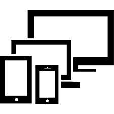
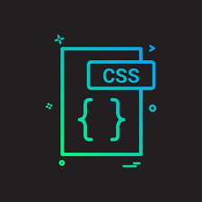

Responsive
Is an approach to web design that makes web pages render well on a variety of devices and window or screen sizes.
Standar CSS
Download the StandardCSS, or use the hotlink below, and include it in the head of your web project before your own styles.
Desing
Web pages can be viewed using many different devices:desktops, tablets, and phones. Your web page should look good, and be easy to use.